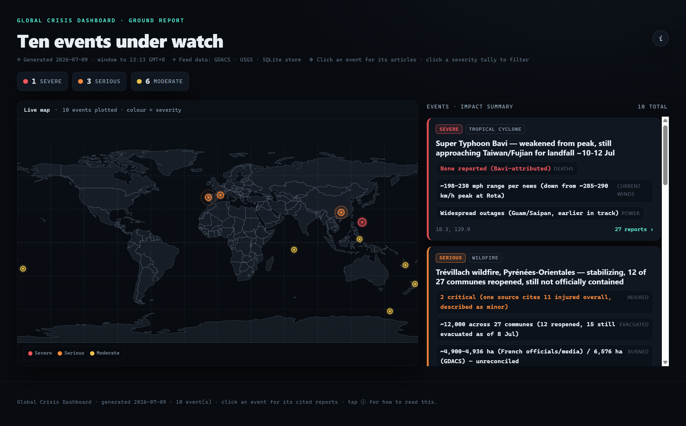
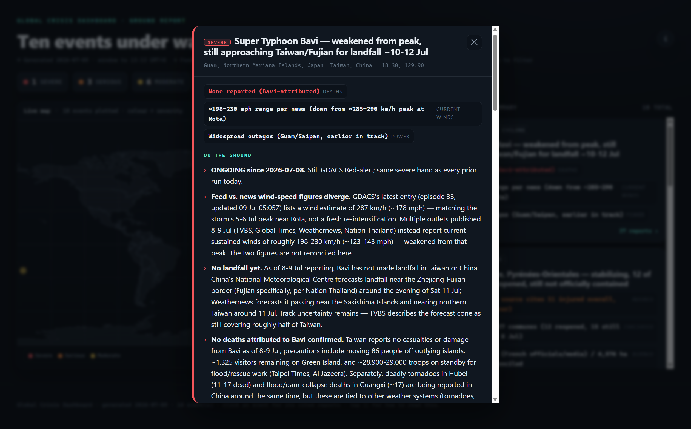

The world's crises,
grounded.
A self-running disaster desk that pulls live USGS & GDACS feeds, attaches cited ground reporting, reconciles the numbers it can't verify, and remembers what changed since the last run — rendered as one fixed-format report.
Super Typhoon Bavi — weakened from peak, approaching Taiwan / Fujian
GDACS still lists 287 km/h — the 5–6 Jul peak near Rota, not a re-intensification. Outlets (TVBS, Global Times, Weathernews) report current sustained winds of ~198–230 km/h. The two figures are stated, not merged.
One screen. The whole planet under watch.
A world map colour-coded by severity, an impact summary per event, and every claim one click from its cited sources. Same fixed format on every run — nothing improvised.

// Live map · 10 events plotted · colour = severity · click a tally to filter
Every claim carries its receipts.
Most dashboards smooth over the messy parts. This one shows its work: where a number came from, and where the sources disagree.
- FEEDFeed facts come from feedsMagnitude, alert level, coordinates, timing — read straight from USGS & GDACS.
- DBHistorical claims come from memoryTrend, first-flagged date and escalation history are read from the SQLite store — never guessed.
- NEWSNews claims come from cited articlesCasualties, evacuations, damage — each attributed to a named, linked source in the modal.
- ?Uncertainty is stated, not hiddenPopulation, damage and casualty figures are never invented; conflicting sources are shown side by side, unreconciled.

Fetch, reconcile, remember, render.
Paste one prompt into a scheduled Claude Code routine. Each run starts empty, clones the repo, and commits its updated memory back — so the next run knows what changed.
Read memory
Dump the prior feeds.db so the run can diff against what it already knew. First run is empty — everything is NEW.
Fetch public feeds
Pull all_day.geojson from USGS and the GDACS event list — public, keyless. If one feed fails, it's marked degraded and the run continues.
Select & band
Deterministic thresholds flag key events and sort them into severe · serious · moderate — the same rule every run.
Deduplicate across feeds
A single quake often appears in both USGS and GDACS under different ids. Judgment collapses those into one event, merging conservatively and keeping every source.
Attach cited ground reporting
Grounded news is fetched per event and stored as attributed articles — the "on the ground" narrative, with its receipts.
Ingest, render, commit
ingest the payload, render the Jinja template to events.html, prune stale events, and push feeds.db + the report back to the repo.
Run by an agent.
Remembered by the repo.
There's no back-end to babysit. A scheduled Claude Code routine is the operator — it wakes up on its own and treats this repository as its brain.
Each run clones the repo, reads the prior SQLite memory, fetches the feeds, and commits the updated store and report back — so the next run picks up exactly where this one left off. The repo is the memory: SQLite for the structured facts, git history as the journal.
That's why an event never resets to zero. The desk knows when it was first flagged, its peak band, how many runs it has been seen in, and whether it has escalated, eased, or simply held since — and folds that history back into every summary. Read one report and you're reading everything the desk has learned about that event, not just today's snapshot.
run 1
19 runs
latest
What's under the hood.
Knows what changed
Every event carries NEW · ONGOING · ESCALATED · DE-ESCALATED · REVISED state, plus new / escalated / cleared counts per run — because the store persists between runs.
Earthquakes to cyclones
Quakes, tropical cyclones, floods and wildfires on one map, each with a hazard label and severity band drawn from the same deterministic rules.
Spots related events
An event within ~150 km and 14 days of a prior serious+ event of the same hazard is flagged as an aftershock or related — not treated as brand new.
One event, many feeds
Cross-feed judgment collapses the same real-world event reported under different ids, unions the articles, and keeps the highest band.
Same format, every run
A pure Jinja template does all presentation, so the report never drifts. What changes is the data — never the shape.
Reads on any screen
Map, feed console and event modals reflow from desktop down to mobile, with a built-in "how to read this" explainer.
No keys. No services. One file of code.
- RuntimePython 3.12 + Jinja2 — and nothing else
- FeedsPublic & keyless — USGS + GDACS
- StoreA single SQLite file, tracked in git as the source of record
- CodeOne CLI — init · dump · ingest · render · prune
- OutputA self-contained events.html, committed so the latest render is always viewable
# install (nothing but Jinja2) $ pip install -r requirements.txt # ingest the seed payload & render $ python feeds_store.py ingest --json report.seed.example.json ingested 5 event(s), 18 article link(s) $ python feeds_store.py render rendered 5 event(s) -> events.html # open it in a browser — done.
See what's under watch right now.
The report regenerates on a schedule and commits itself back. Open the latest render, or clone it and point it at your own routine.